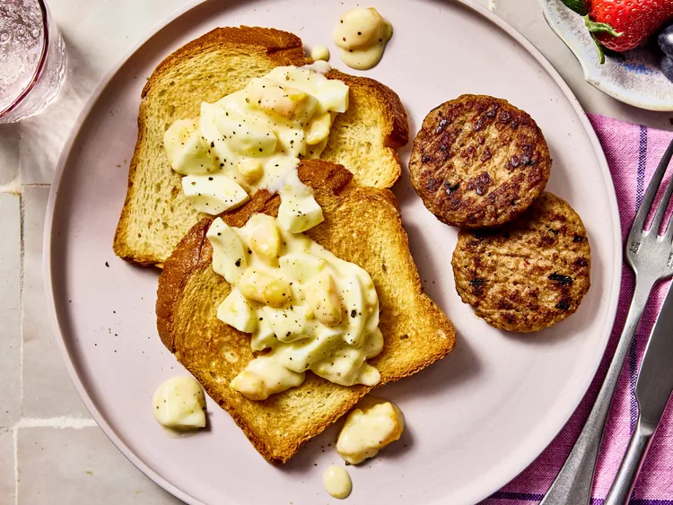
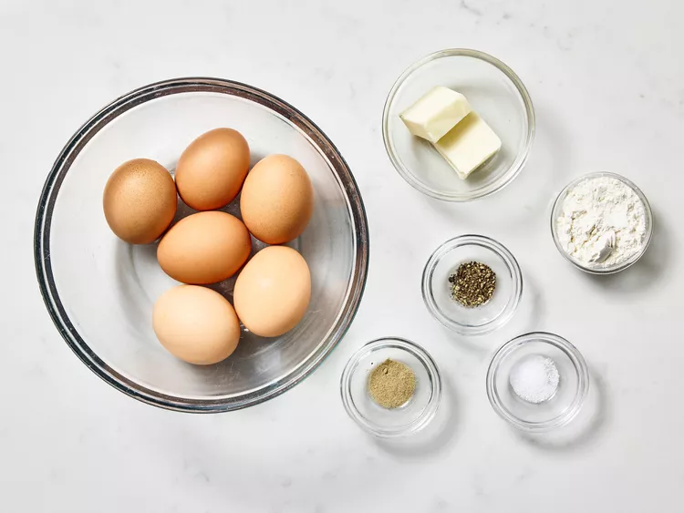
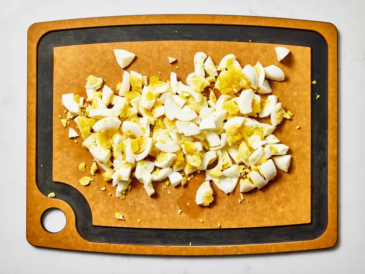
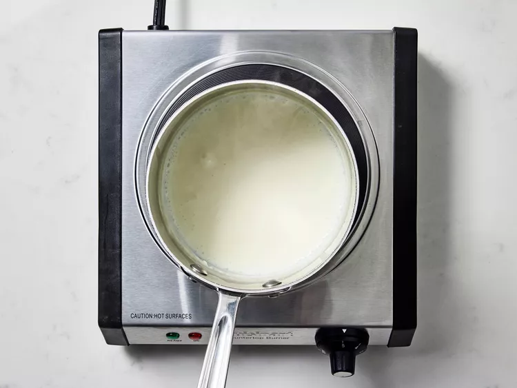
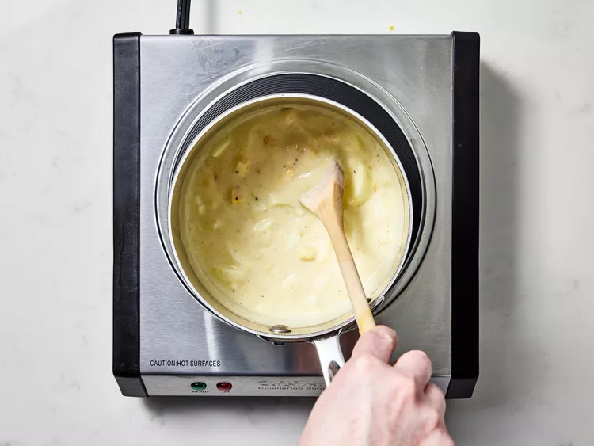

HOME
Creamed Eggs

Ingredients :
- 6 large eggs
- 2 tablespoons butter
- 2 tablespoons all-purpose flour
- 2 cups milk
- ⅛ teaspoon ground white pepper (Optional)
- salt and freshly ground black pepper to taste
Steps :
- Gather the ingredients.

- Place eggs in a saucepan and cover with cold water. Bring water to a boil and immediately
remove from heat. Cover and let eggs stand in hot water for 10 to 12 minutes. Remove from hot water, cool,
peel and chop.

- Melt butter in a saucepan over medium heat; stir in flour until smooth. Gradually mix in milk
so that no lumps form and stir constantly until mixture comes to a boil.

- Stir white pepper, salt, black pepper, and chopped eggs into the sauce; stir until eggs are
heated through.
